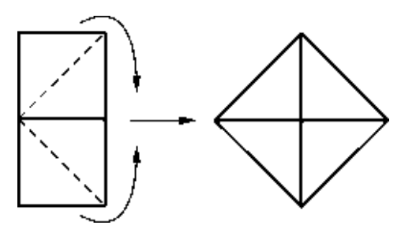
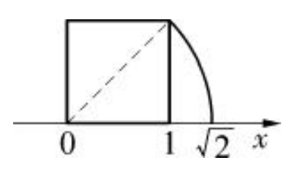

1. 用计算器求 $\sqrt{2}$，观察它的小数形式。
2. 利用平方运算验算所得结果，你发现了什么？
计算器显示的 $\sqrt{2}$ 是近似值，它的平方略小于2。这提示我们 $\sqrt{2}$ 可能不是有理数。
用计算器求 $\sqrt{2}$，显示结果为 $1.414213562$。再用计算器计算 $1.414213562$ 的平方，结果是 $1.999999999$，并不是 $2$。这说明计算器求得的只是 $\sqrt{2}$ 的近似值。
实际上，$\sqrt{2}$ 是一个无限不循环小数。让我们来感受一下它的长度：
（以上仅为前几百位，实际上它无限不循环）
我们可以用反证法证明 $\sqrt{2}$ 不是有理数：
假设 $\sqrt{2}$ 是有理数，那么它可以表示为 $\dfrac{q}{p}$ ($p,q$ 是互质的正整数)。由 $\sqrt{2}$ 的意义得 $\left(\dfrac{q}{p}\right)^2 = 2$，即 $q^2 = 2p^2$。于是 $q^2$ 是偶数，从而 $q$ 也是偶数。设 $q=2k$，代入得 $4k^2 = 2p^2$，即 $p^2 = 2k^2$，所以 $p$ 也是偶数。这与 $p,q$ 互质矛盾。因此假设不成立，$\sqrt{2}$ 不是有理数。
这个证明最早出现在欧几里得的《几何原本》中，是人类认识无理数的开端。
如图10.2.1，将两个边长为1的正方形分别沿对角线剪开，得到四个等腰直角三角形，可以拼成一个面积为2的大正方形，其边长为 $\sqrt{2}$。因此，边长为1的正方形的对角线长就是 $\sqrt{2}$。

利用这个事实，我们可以在数轴上找到表示 $\sqrt{2}$ 的点，如图10.2.2所示。

$\pi^{2}$，$1.01$，$\sqrt[3]{8}$，$3.14$，$2.030030003\ldots$，$-\sqrt{32}$，$1.010010001$，$\dfrac{355}{113}$。
无理数有：$\pi^{2}$，$2.030030003\ldots$，$-\sqrt{32}$。
因为：$\pi^{2}$ 是 $\pi$ 的平方，$\pi$ 是无理数，其平方仍为无理数；$2.030030003\ldots$ 是无限不循环小数；$-\sqrt{32} = -4\sqrt{2}$，$\sqrt{2}$ 是无理数。
其余均为有理数：$\sqrt[3]{8}=2$，$1.01$，$3.14$ 是有限小数；$1.010010001$ 是有限小数（最后以001结尾，不再延续）；$\dfrac{355}{113}$ 是分数，都是有理数。
用计算器求得 $\sqrt{3}+\sqrt{2} \approx 1.732+1.414 = 3.14626437$，$\pi \approx 3.141592654$，所以 $\sqrt{3}+\sqrt{2} > \pi$。
$\dfrac{1}{6}-\sqrt{2} \approx 0.1667 - 1.4142 = -1.2475$，所以 $\left|\dfrac{1}{6}-\sqrt{2}\right| \approx 1.2475$，$\dfrac{\pi}{2} \approx 1.5708$，因此原式 $\approx 1.5708 - 1.2475 = 0.3233 \approx 0.32$。
也可以先化简：因为 $\dfrac{1}{6} < \sqrt{2}$，所以 $|\dfrac{1}{6}-\sqrt{2}| = \sqrt{2} - \dfrac{1}{6}$，再代入计算。
1. 下列说法是否正确？为什么？
(1) 两个整数相除，如果永远除不尽，那么结果一定是一个无理数；
(2) 任意一个无理数的绝对值都是正数。
(1) 不正确。例如 $1\div 3 = 0.333\ldots$ 是循环小数，属于有理数。
(2) 正确。无理数不可能为0，所以绝对值是正数。
2. 计算：$2\sqrt{6}+3\sqrt{7}$ (精确到0.01)
$\sqrt{6}\approx 2.44949$，$2\sqrt{6}\approx 4.89898$；$\sqrt{7}\approx 2.64575$，$3\sqrt{7}\approx 7.93725$；和 $\approx 12.83623 \approx 12.84$。
3. 比较下列各对数的大小：
(1) $2\sqrt{3}$ 与 $3\sqrt{2}$； (2) $-\dfrac{\sqrt{7}}{2}$ 与 $-\dfrac{\pi}{3}$。
(1) $(2\sqrt{3})^2 = 12$，$(3\sqrt{2})^2 = 18$，所以 $2\sqrt{3} < 3\sqrt{2}$。
(2) $-\dfrac{\sqrt{7}}{2} \approx -1.3229$，$-\dfrac{\pi}{3} \approx -1.0472$，因为 $-1.3229 < -1.0472$，所以 $-\dfrac{\sqrt{7}}{2} < -\dfrac{\pi}{3}$。
4. 完成下列表格：
| 实数 | $\pi$ | $\sqrt{2}$ | $\sqrt{2}-1$ | $\sqrt{2}-\sqrt{3}$ |
|---|---|---|---|---|
| 相反数 | ||||
| 绝对值 |
我们可以通过尝试逼近的方法求 $\sqrt{5}$ 的近似值：
因为 $2^2<5<3^2$，所以 $2<\sqrt{5}<3$。进一步，$2.2^2=4.84<5<2.3^2=5.29$，所以 $2.2<\sqrt{5}<2.3$。继续，$2.23^2=4.9729<5<2.24^2=5.0176$，所以 $2.23<\sqrt{5}<2.24$。如此反复，可以得到更精确的近似值。
古代数学家还使用一种迭代公式：$x_{n+1} = \dfrac{1}{2}\left(x_n + \dfrac{5}{x_n}\right)$，从 $x_0=2$ 开始，可以快速逼近 $\sqrt{5}$。例如 $x_1 = 2.25$，$x_2 = 2.23611$，已经非常接近真实值。
用计算器验证：$\sqrt{5} \approx 2.236067978$。
数形结合： 实数与数轴上的点一一对应，直观理解实数。
分类思想： 实数按定义分为有理数和无理数。
逼近思想： 用有理数逼近无理数，近似计算。
✨ 实数将数与点完美对应，让数学世界更加完整 ✨